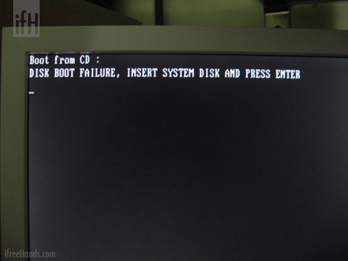
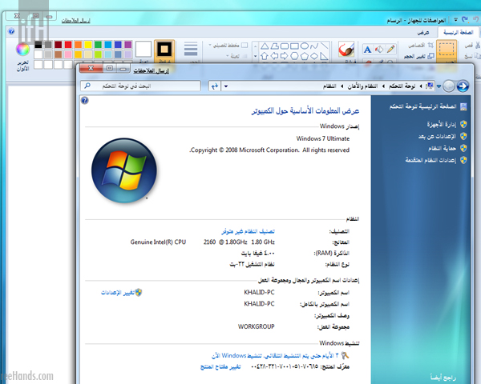

تقرير | ويندوز ٧

خلال الاربع أيام السابقة قمت بتجربة Windows Seven نسخة beta طبعاً .. ومن خلال هذه التدوينة سأسرد تجربتي للنظام
الحصول على النظام ..
في البداية يجب الحصول على نسخة من النظام وذلك بتحميلها من الصفحة المخصصة لذلك ويجب تسجيل دخول لحسابك للحصول على Product Key .. هناك نسختين وبعدة لغات نسخة ٣٢ بت (وهي التي حملتها) ونسخة ٦٤ بت .. واللغات المتوفرة الانجليزية ، العربية ، الالمانية ، اليابنية والهندية (لنسخة ٣٢ بت فقط) .


حجم النسخة قرابة ٢.٤٠ قيقا .. عملية التحميل استغرقت معي قرابة الــ ٦ ساعات ..
التحضير لتركيب النظام
بعد إنتهاء عملية التحميل تم حرق ملف الــ iso على DVD


بعد حرق الــ DVD .. بدأت بتهيئة جهازي الخاص بالتجارب :) .. قمت بستبدال الهارديسك بهارديسك أخر فاضي ليكون خاص بــ ويندوز ٧

مواصفات جهازي المستخدم لتجربة النظام ..
المعالج : Dual core 1.8 .. الرام : ٤ قيقا .. الهارديسك: ١٦٠ قيقا .. كرت الشاشة : 256 ميقا
تركيب النظام

أدخلت الــ DVD

اعدادات اللغة والتفضيلات الأخرى ( النسخة التي قمت بتحميلة هي النسخة العربية لكن للا سف لا تدعم الواجهة الانجليزي )

خطوات التركيب


تجربة النظام وتنشيطة
صورة عامة لسطح المكتب

مواصفات جهازي المستخدم لتجربة النظام
(يلاحظ في الصورة ان لم اقم بتنشيط النسخة )

تنشيط نسخة النظام
(يلاحظ في جميع نوافذ النظام رابط في الأعلى [إرسال الملاحظات] وهو خاصة بمراسلة ميكروسوفت بالمشاكل والإقتراحات للنظام )


تحديث للنظام

من الأمور الملاحظ في هذه الإصدار هو التعديل على الـ Task bar وبعد التجربة احسست انه يشبه كثيراً الـ Dock في الماك .. تثبيت برامج على الـ Task bar لتسهيل الوصول إليها ، عند فتح برنامج فإنه يظهر عليه وعند إقفاله يختفي ، البرامج المثبتة عليه تظهر بشكل خاص عند فتحها .

عند الوقوف فوق صورة ايقون البرنامج سيظهر إستعراض للنافذة.

وفي حالة وجود أكثرمن نافذة ستظهر بجوار بعضها بالإضافة إلى خطوط عمودية تبين وجود اكثر من نافذة .. كما في الصورة.

الرموز على الـ Task bar اصبح شكلها اجمل ولها خصائص افضل .. إما *ظهور الرموز والاعلامات* او *إخفائهم* او *ظهور الإعلامات فقط*.

خلاصة النظام
النظام افضل بكثيرعن سابقه ( فيستا ) وبشكل عام النظام خفيف وسريع وكذلك فيه تحسينات جميلة بالرغم من أن روح الفيستا وشكله موجودة فيه :) .. التجربة كانت سريع ولم أتعمق فيه بشكل كبير .. وهناك امور كثيرة لم استكشفها سأتركها لكم :) .